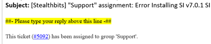
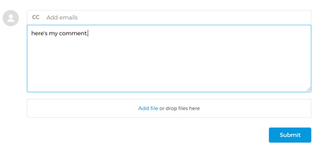

You can communicate with engineers via email or through the customer portal.
- To communicate via email, please ensure you type your response above the below highlighted line.
- This will ensure that your response is automatically added to your ticket.

- If you type below the highlighted line, those comments will not be added to your ticket.
Portal
- To communicate via the customer portal, go to My Activities from the homepage.
- Locate your ticket.
- Enter your response in the box below.

- When you are finished, click on Submit.